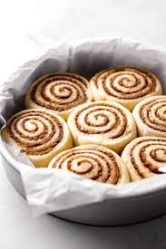

Cinnamon Rolls

Description
Cinnamon rolls are a classic baked treat that are enjoyed by people of all ages. These rolls are soft, fluffy, and filled with a sweet and spicy cinnamon filling. Making cinnamon rolls from scratch requires some time and effort, but the end result is well worth it. To start, you'll need to make the dough by combining flour, yeast, sugar, and butter in a mixing bowl. Once the dough has come together, it needs to be kneaded until it is smooth and elastic. Then, the dough should be left to rise until it has doubled in size.
Once the dough has risen, it's time to roll it out and add the cinnamon filling. The filling is made by mixing butter, sugar, and cinnamon together until it forms a smooth paste. This paste is then spread onto the rolled-out dough, and the dough is rolled up tightly. The roll is then cut into individual pieces and placed in a baking dish to rise again. After they've risen, the rolls are baked until they're golden brown and the filling is bubbly. Finally, a delicious cream cheese frosting is drizzled over the top of the cinnamon rolls, making them even more irresistible. These warm and comforting cinnamon rolls are perfect for breakfast or dessert and are sure to please anyone who tries them.
Ingredients
For the dough:
- 4 cups all-purpose flour
- 1/3 cup granulated sugar
- 2 1/4 tsp active dry yeast
- 1 tsp salt
- 1/2 cup unsalted butter, melted
- 1 cup milk
- 2 large eggs, at room temperature
For the cinnamon filling:
- 1 cup light brown sugar, packed
- 2 1/2 tbsp ground cinnamon
- 1/2 cup unsalted butter, softened
For the cream cheese frosting:
- 4 oz cream cheese, softened
- 1/4 cup unsalted butter, softened
- 2 cups powdered sugar
- 1 tsp vanilla extract
- 2-3 tbsp milk
Note: These quantities are for a standard recipe that yields about 12 cinnamon
rolls. Adjust the quantities based on how many rolls you want to make.
Steps
- In a large mixing bowl, combine the flour, sugar, yeast, and salt. Mix until evenly distributed.
- Add the melted butter, warmed milk, and eggs to the bowl. Mix with a wooden spoon until a sticky dough forms.
- Dust a clean surface with flour and transfer the dough to it. Knead the dough for about 10 minutes, or until it becomes smooth and elastic.
- Place the dough in a greased bowl and cover it with a clean cloth. Allow it to rise for 1-2 hours, or until it doubles in size.
- Preheat the oven to 350°F (180°C). Grease a 9x13 inch baking dish.
- Roll out the dough into a large rectangle, about 1/4 inch thick and spread the softened butter evenly over the dough, leaving a 1-inch border aroundthe edges.
- In a small bowl, mix the brown sugar and cinnamon for the filling and sprinkle the brown sugar-cinnamon mixture over the buttered dough.
- Roll the dough tightly into a log, starting at the long edge closest to you, and cut into 12 even slices.
- Place the cinnamon rolls in the greased baking dish, cover the baking dish with a clean cloth and let the rolls rise for 30-45 minutes, or until they've doubled in size.
- Bake the cinnamon rolls in the preheated oven for 25-30 minutes, or until they're golden brown and puffy.
- While the cinnamon rolls are baking, make the cream cheese frosting.
- When the cinnamon rolls are done, remove them from the oven and let them cool for a few minutes.
- Drizzle the cream cheese frosting over the warm cinnamon rolls.
- Serve the cinnamon rolls warm and enjoy!